Qué son las energías renovables
Las energías renovables son fuentes de energía que se obtienen de fuentes naturales inagotables, ya sea por la inmensa cantidad de energía que contienen (no se acabarán mientras dure la civilización humana), o porque son capaces de regenerarse mediante medios naturales a medida que las consumimos.
Las energías renovables pueden dividirse en dos categorías:
- No contaminantes: hidráulica, solar, eólica, geotérmica, mareomotriz, de las olas
- Contaminantes: biomasa y la parte biodegradable de los residuos sólidos urbanos.
Las energías renovables son sostenibles a largo plazo, y por eso su peso en el mix no deja de crecer. El principal problema para cubrir con ellas todas nuestras necesidades energéticas es su disponibilidad: no siempre podemos disponer de estas fuentes de energía en la cantidad que necesitamos. Debemos, por tanto, encontrar soluciones tecnológicas a este problema. En este vídeo se muestran precisamente algunas soluciones que ya se utilizan y otras que están en desarrollo:
Centrales hidroeléctricas
La energía hidráulica es la energía del agua cuando se mueve a través de un cauce (energía cinética) o cuando se encuentra embalsada a cierta altura (energía potencial). Cuando se deja caer el agua, la energía potencial se transforma en energía cinética que puede mover unas turbinas que a su vez mueven un generador eléctrico. El proceso de transformaciones energéticas que tendrían lugar sería:
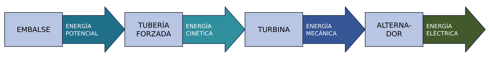
AmpliarComponentes principales de una central hidroeléctrica
En esta imagen tienes los componentes principales de una central hidroeléctrica típica:
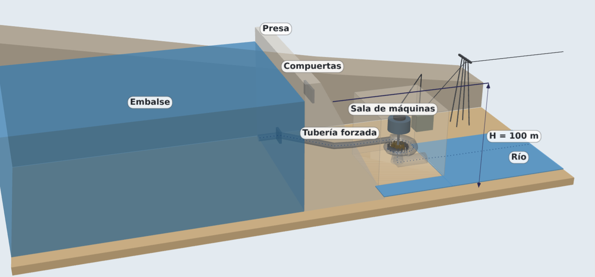
AmpliarEmbalse: es la acumulación de agua que se logra obstruyendo el cauce de un río. Para retenerla se construye un muro grueso de hormigón llamado presa.
Aunque existen numerosas tipologías de presas, en líneas generales podemos clasificarlas en dos grandes grupos: presas de fábrica (de hormigón) y presas de materiales sueltos, siendo estas últimas las más comunes a nivel mundial por su versatilidad, aunque no en España donde abundan más las de fábrica.
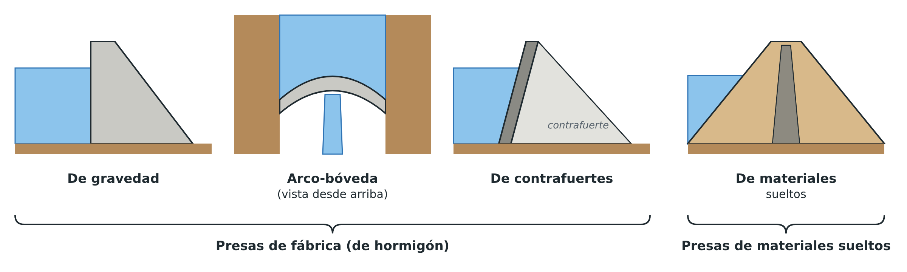
AmpliarLas presas de fábrica se pueden clasificar a su vez en tres tipos:Presas de gravedad
El mecanismo resistente de este tipo de presas es, principalmente, el rozamiento del cuerpo de presa con el terreno sobre el que se apoya debido a su gran peso (resistencia al deslizamiento). Su sección transversal es triangular, siendo la anchura de la base en torno al 80% de la altura de la presa.
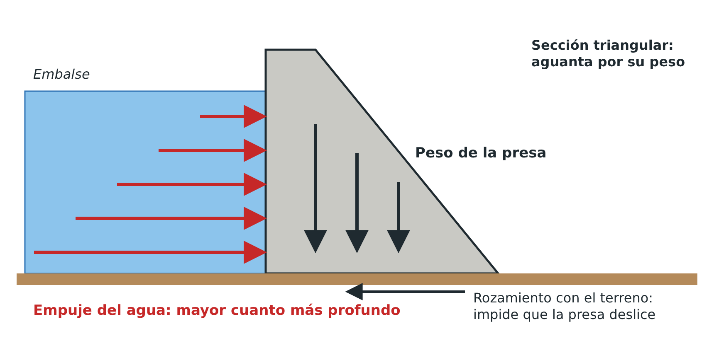
Ampliar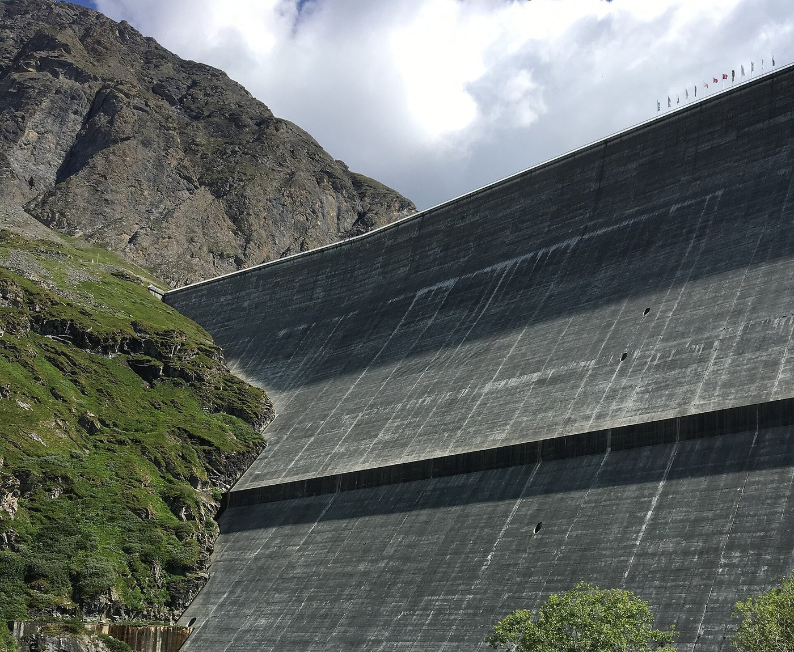
Foto: Conceptuel · CC BY 4.0 · Wikimedia Commons (recortada)Presas arco
Este tipo de presas resisten por su forma. Son de forma convexa y sus extremos se apoyan en las laderas de montañas, de manera que el empuje del agua se transmite a estas. Utiliza el principio del arco para redirigir los esfuerzos.
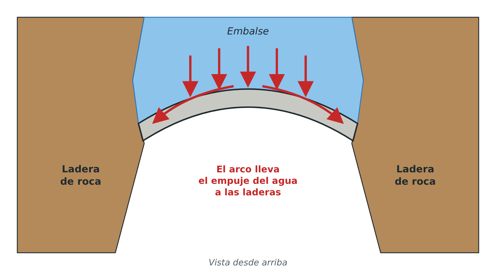
AmpliarLa sección del cuerpo de este tipo de presas puede ser de tres tipos:
- Presas Arco: sección trapezoidal.
- Presas en Bóveda: sección curva.
- Presas Arco-gravedad: sección menos esbelta, de forma que el peso de la presa ayude a resistir los esfuerzos.
Son presas más esbeltas que las de gravedad. En el caso de las de arcos y bóveda, la base es del 20 al 40% de la altura. En cuanto a las presas arco-gravedad, la esbeltez se reduce un poco, estando entre el 40 y el 60% de la altura de la presa.
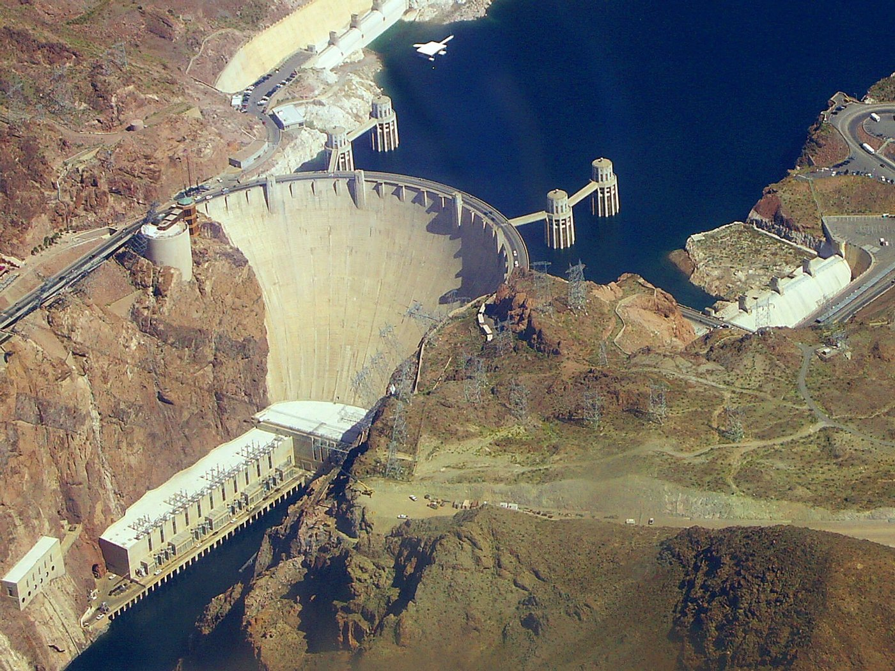
Presas aligeradas o de contrafuertes
Este tipo de presas poseen un mecanismo resistente similar al de las presas de gravedad. Usan mucho menos material porque resisten gracias a unos contrafuertes colocados a intervalos regulares.
La complejidad de su forma, a diferencia de las presas de gravedad convencionales, hace que requieran de gran cantidad de mano de obra por lo que pese a tener menos material resultan mucho más caras. Hoy en día prácticamente no se construyen.
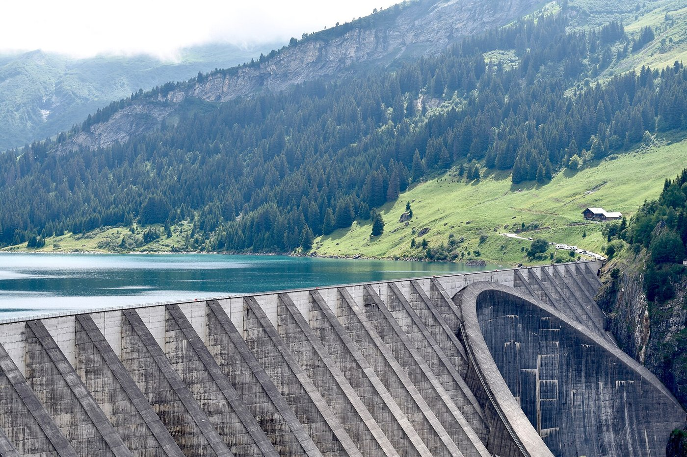
Las presas de materiales sueltos son presas muy versátiles que se construyen prácticamente con cualquier material, por lo que son las más abundantes en el mundo. Tienen sección trapezoidal y son mucho menos esbeltas que las presas de fábrica, siendo su principal característica la zonificación de sus materiales, es decir, cada tipo de material se coloca donde mejor ejerce su función (materiales impermeables, materiales pesados, etc.).
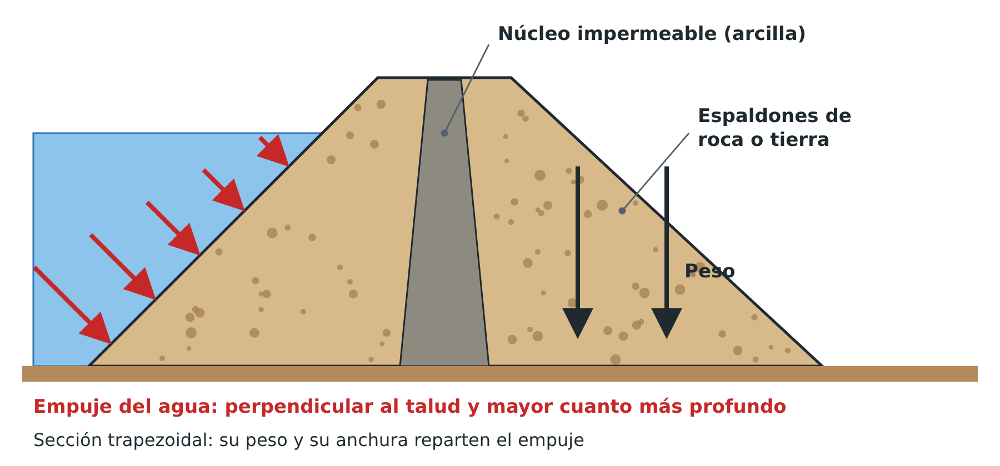
AmpliarLas presas de materiales sueltos son las más empleadas en todo el mundo gracias a su gran versatilidad. En España, sin embargo, existe un mayor número de presas de fábrica debido a la existencia de buenas y numerosas cerradas donde se pueden apoyar los extremos de las presas de fábrica.
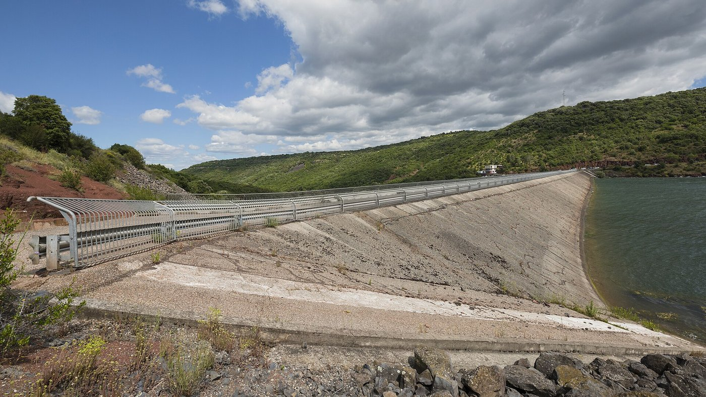
Foto: Christian Ferrer · CC BY 4.0 · Wikimedia CommonsCompuertas: son unas placas móviles que al levantarse dejan pasar el agua cuando el nivel sube en exceso. El agua que se evacua por las compuertas no pasa por la sala de máquinas.
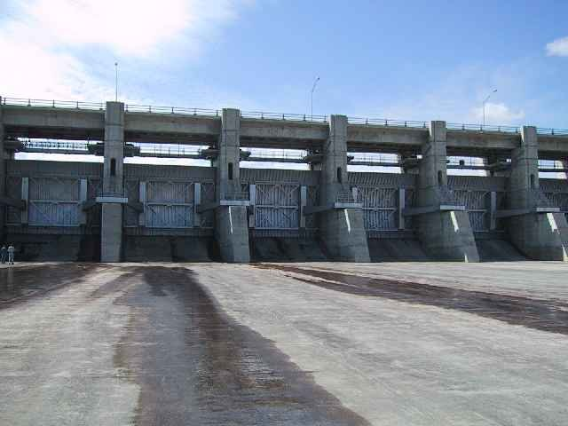
Tubería forzada: es la tubería por la que se "fuerza" a pasar el agua a través de las turbinas. Suele estar colocada a 1/3 de la altura de la presa para que los fangos y lodos del fondo no sean arrastrados a las turbinas.
Sala de máquinas: alberga las turbinas y el alternador.
Turbinas: son máquinas rotativas que transforman la energía cinética del agua en energía mecánica de rotación. Las más utilizadas son las Pelton, Francis y Kaplan:
Turbina Pelton
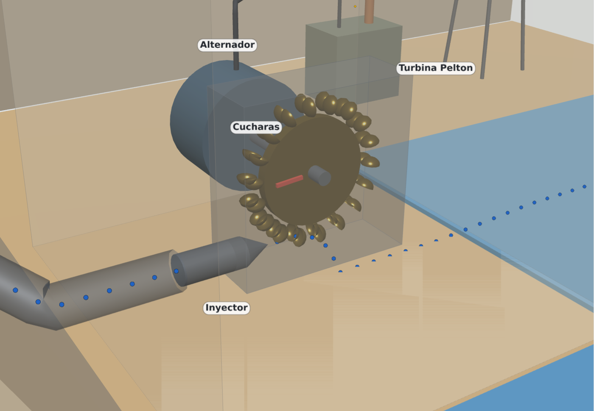
AmpliarTambién llamada "Rueda Pelton", es una turbina de acción o de chorro, tangencial y normalmente de eje horizontal. Se utiliza en saltos de agua de gran altura (superiores a 200 m) y con pequeños caudales de agua (hasta 10 m3/s).
El distribuidor está formado por una o varias entradas de agua al rodete. Los álabes que están situados sobre la periferia del rodete tienen forma de cuchara. La fuerza del impulso del agua es la responsable del giro de la turbina.
Turbina Francis
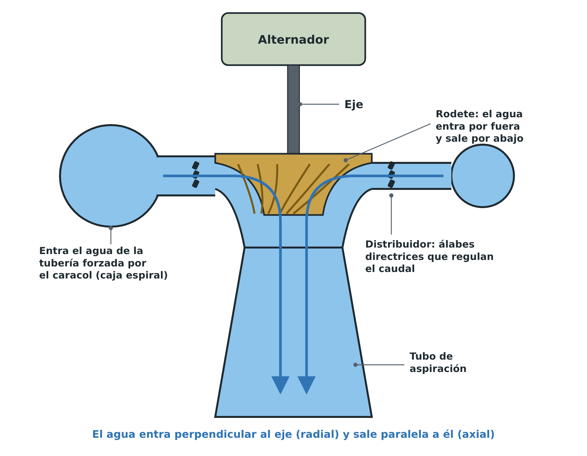
AmpliarEs una turbina de reacción, radial-axial, normalmente de eje vertical, como la de la figura, aunque también las hay de eje horizontal. Se utiliza en saltos de altura intermedia (de unos 40 a 600 m) y con caudales muy variados de agua, entre 2 y 200 m3/s.
El distribuidor está compuesto de aletas móviles para regular el caudal de agua que conduce al rodete. El agua procedente de la tubería forzada entra perpendicularmente al eje de la turbina y sale paralela a él.
Para regular el caudal de agua que entra en el rodete se utilizan unas paletas directrices situadas en forma circular, y cuyo conjunto se denomina distribuidor.
Esta turbina se puede utilizar en un gran rango de saltos y caudales de agua, es la más versátil.
Turbina Kaplan
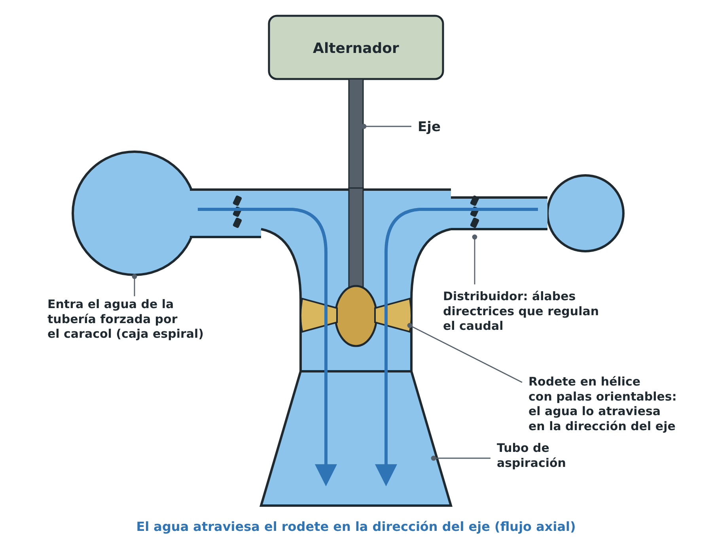
AmpliarEs de reacción pura, de flujo axial (el agua atraviesa el rodete en la dirección del eje), y normalmente de eje vertical. Las características técnicas y de construcción son muy parecidas a las de tipo Francis. Se utiliza en saltos de pequeña altura de agua (hasta unos 70 m) y con caudales que suelen superar los 15 m3/s.
Para mucho caudal de agua a poca altura esta turbina es la mejor opción. Pueden variar el ángulo de sus palas durante su funcionamiento.
Alternador-generador: va unido al eje de la turbina y es una máquina eléctrica que transforma la energía mecánica de rotación en energía eléctrica (es un motor a la inversa). Consiguen una corriente alterna de unos 20 000 V.
Transformadores: elevan la tensión de salida del alternador hasta el valor necesario para transportar la energía eléctrica minimizando las pérdidas. En España, la red de transporte trabaja a 220 000 y a 400 000 V.
Líneas de transporte: llevan la corriente eléctrica producida hasta los centros de consumo.
Potencia de una central hidroeléctrica
En una central hidráulica podemos hablar de varios tipos de potencia:
Potencia instalada: es la máxima potencia que pueden dar los dispositivos instalados en la central. Es la potencia nominal de los generadores de la central, por lo que es un dato conocido para cualquier central.
Potencia media: es la potencia real que nos proporciona la central en las condiciones de operación que sean. Es un valor que irá cambiando según las condiciones, por lo que habrá que calcularlo para cada situación. Se puede calcular según las fórmulas siguientes:
La potencia media teórica de una central hidráulica será:
\[P_t = \rho\cdot g\cdot Q\cdot H\]
donde:
- \(\rho\): densidad del agua (1000 kg/m3)
- \(g\): aceleración de la gravedad, \(g = \text{9,81}\ \text{m/s}^{2}\)
- \(Q\): caudal turbinable (m3/s)
- \(H\): desnivel disponible (m)
La potencia media real o potencia efectiva tendrá que tener en cuenta las posibles pérdidas producidas en los elementos de la central. Para ello, se tendrán en cuenta los rendimientos:
\[\begin{aligned} P_e &= \eta\cdot P_t \\ &= \eta_t\cdot \eta_g\cdot \eta_m\cdot P_t \end{aligned}\]
El rendimiento global η está compuesto por el rendimiento de tres elementos:
- ηt: rendimiento de la turbina (entre 0,85 y 0,95 en las turbinas actuales; menos si trabajan con un caudal muy distinto del de diseño)
- ηg: rendimiento del generador (entre 0,95 y 0,99; los grandes superan el 98 %)
- ηm: rendimiento mecánico del conjunto (valores entre 0,95 y 0,99 con un adecuado mantenimiento y lubricación)
Tipos de centrales hidroeléctricas
De embalse
Es el tipo más frecuente de central hidroeléctrica. Utilizan un embalse para almacenar agua e ir graduando el caudal que pasa por la turbina. Es posible generar energía durante todo el año si se dispone de reservas suficientes. Requieren una inversión mayor y su impacto ambiental también es mucho mayor.
Existen dos variantes de este tipo de centrales:
Centrales a pie de presa. En un tramo de río con un desnivel apreciable se construye una presa de una altura determinada. La sala de turbinas se sitúa después de la presa.
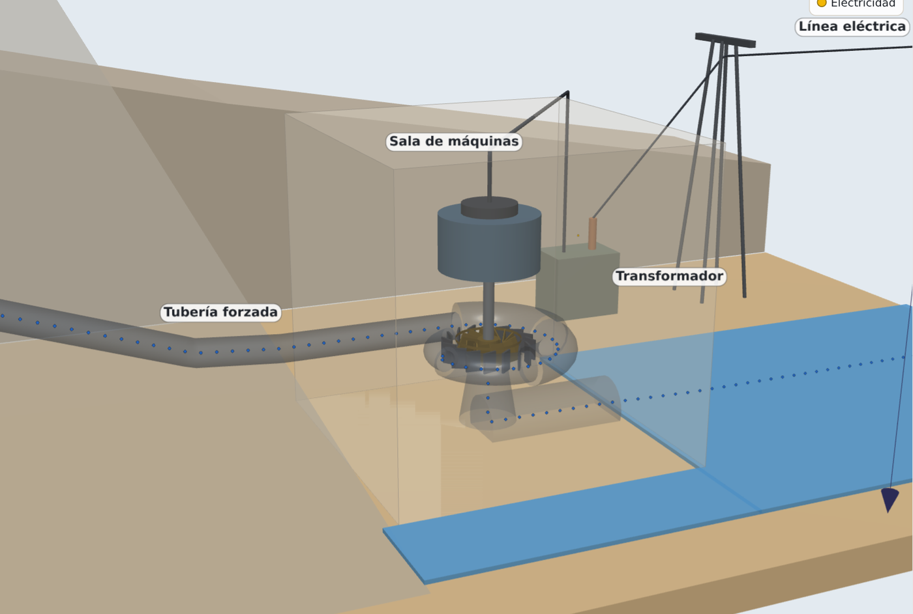
AmpliarCentrales por derivación de las aguas. Las aguas del río se desvían mediante una pequeña presa y se conducen mediante un canal con una pérdida de desnivel tan pequeña como sea posible. Después, llegan hasta un pequeño depósito llamado cámara de carga o de presión. De esta sala arranca una tubería forzada que va a parar a la sala de turbinas. Posteriormente, el agua se devuelve río abajo, mediante un canal de descarga. Los desniveles de este tipo de centrales son más grandes que en las centrales a pie de presa.
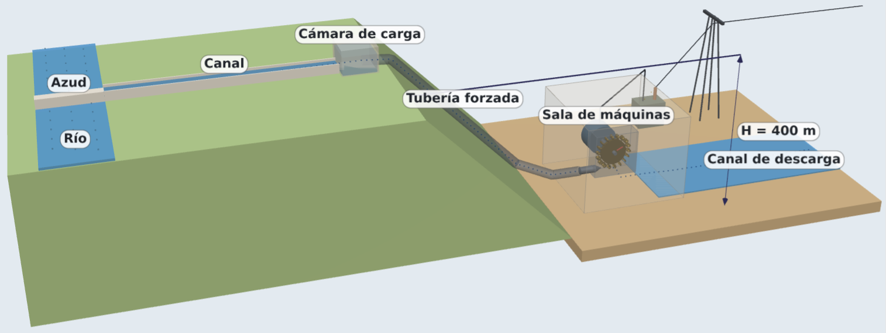
AmpliarDe agua fluyente
Utilizan parte del flujo de un río para generar energía eléctrica. Operan de forma continua porque no tienen capacidad para almacenar agua al no disponer de embalse. Turbinan el agua que haya disponible en cada momento (limitadas por la capacidad instalada, por supuesto)
Se usan en zonas donde el terreno no presenta mucho desnivel. Es necesario que el caudal del río sea lo suficientemente constante como para asegurar una potencia determinada durante todo el año. En la temporada de precipitaciones abundantes, alcanzan su máxima potencia e incluso dejan pasar agua excedente. En cambio, durante la época seca, la potencia disminuye en función del caudal, llegando a ser casi nula en algunos ríos en verano.
De bombeo o reversibles
Son centrales que, además de poder transformar la energía potencial del agua en electricidad, tienen la capacidad de hacerlo a la inversa. Es decir, pueden aumentar la energía potencial del agua elevándola a un embalse o depósito, consumiendo para ello energía eléctrica. De esta manera pueden utilizarse como un método de almacenamiento de energía (una especie de batería gigante).
Están concebidas para satisfacer la demanda energética en horas pico y almacenar energía en horas valle.
Aunque lo habitual es que estas centrales turbinen/bombeen el agua entre dos embalses a distinta altura, existe un caso particular llamado centrales de bombeo puro, en las que el embalse superior se sustituye por un gran depósito cuya única aportación de agua es la que se bombea del embalse inferior.
Otras formas de aprovechar energía hidráulica
Además de las centrales de turbina que hemos visto, existen otras formas de aprovechar la energía del agua para generar electricidad:
Centrales mareomotrices
Utilizan el flujo y reflujo de las mareas. Pueden ser ventajosas en zonas costeras donde las diferencias entre las mareas son amplias y las condiciones morfológicas de la costa permiten la construcción de una presa que corta la entrada y salida de la marea en una bahía. Se genera energía tanto en el momento del llenado como en el momento del vaciado de la bahía.
También hay centrales mareomotrices sumergidas, que aprovechan las corrientes de marea. La primera turbina de este tipo a tamaño real se probó en 2003 frente a la costa de Inglaterra (Seaflow, 300 kW). Hoy la mayor instalación es MeyGen, en Escocia: 4 turbinas de 1,5 MW (6 MW) que funcionan desde 2018 y que hasta 2025 habían producido unos 80 GWh.
Centrales undimotrices
Son centrales que aprovechan el movimiento de las olas (energía undimotriz). Este tipo de central es objeto de investigación desde la década de 1980. Permiten obtener energía limpia a partir de las olas. En España funciona desde 2011 la central de Mutriku (Gipuzkoa), dentro de un dique: 16 cámaras, cada una con una turbina de 18,5 kW (296 kW). En 2023 produjo 266 MWh, lo que gastan unos 100 hogares.
Existen diferentes tipos de dispositivos para aprovechar la energía del movimiento de las olas del mar. Uno de los más extendidos consiste en unas cámaras situadas cerca de la superficie del agua. Cuando el agua entra en la cámara, su fuerza ayuda a comprimir un aire del interior que a su vez sale por un orificio hacia una turbina Wells, que mueve un generador eléctrico. Cuando la ola se retira, el aire se succiona y vuelve a pasar por la turbina. La turbina Wells gira siempre en el mismo sentido, tanto si el aire sale como si entra, porque sus álabes son simétricos: así se aprovecha la subida y la bajada de cada ola sin válvulas.
Otros dispositivos son boyas que suben y bajan con las olas y mueven un generador; por ejemplo, la CorPower C4 (9 m de diámetro, 300 kW) produce electricidad frente a Portugal desde 2023.
La potencia que trae cada metro de frente de ola (\(H\), altura de la ola en m; \(T\), periodo en s) es:
\[\begin{aligned} P &= \dfrac{\rho\cdot g^{2}\cdot H^{2}\cdot T}{64\,\pi}\\ &\approx \text{0,49}\cdot H^{2}\cdot T\ \text{kW/m} \end{aligned}\]
Crece con el cuadrado de la altura. En Galicia llega de media a 40-45 kW/m; en el Cantábrico, a unos 30; en el Mediterráneo, a menos de 10.
Su gran problema es que el mar es muy duro con las máquinas: los temporales rompen equipos y las centrales dan mucha menos energía de la que prometen (Mutriku, alrededor del 10 % de lo que daría funcionando siempre a su potencia).
En este vídeo tienes más información sobre estas centrales:
Simulación: energía de las olas
Esta simulación muestra dos formas de aprovechar las olas: una columna de agua oscilante dentro de un dique, como la central de Mutriku (Gipuzkoa), y una boya. Cambia la altura y el periodo de las olas y mira cómo cambia la potencia. Pulsa «Iniciar simulación 3D»; arrastra para girar el modelo y acércate con la rueda del ratón o pellizcando la pantalla. Con los botones de vista vas directamente a cada parte.
Prueba a…
- Duplicar la altura de las olas sin cambiar el periodo: ¿por cuánto se multiplica la potencia? ¿Y si duplicas el periodo?
- Fijarte en la turbina del dique: el aire entra y sale, pero ¿en qué sentido gira la turbina?
- Comparar «Calma» y «Temporal»: ¿qué pasa cuando las olas traen más potencia de la que puede dar la turbina?
Simulación: central hidroeléctrica
En esta simulación puedes elegir el tipo de central (de pie de presa, de derivación, fluyente, de bombeo o mareomotriz) y la turbina (Pelton, Francis o Kaplan). Cambia el salto y el caudal y mira qué turbinas encajan, cuánta potencia se obtiene y dónde se pierde energía. Pulsa «Iniciar simulación 3D»; arrastra para girar el modelo y acércate con la rueda del ratón o pellizcando la pantalla. Con los botones de vista vas directamente a cada parte.
Prueba a…
- Poner un salto de unos 300 m con poco caudal y después uno de 10 m con mucho caudal: ¿qué turbina conviene en cada caso?
- En la central de bombeo, bombear y luego generar: ¿cuántos kWh vuelven de cada 100 que se gastan bombeando?
- Escribir los datos de un ejercicio de centrales hidroeléctricas y comprobar tu resultado en «Cálculo paso a paso».
Centrales solares
La energía solar es un tipo de energía renovable que convierte la energía del sol en otra forma de energía (usualmente térmica o eléctrica).
La radiación solar que alcanza la Tierra puede aprovecharse por medio de captadores que, mediante diferentes tecnologías, pueden transformarla en energía térmica o eléctrica.
Los diferentes captadores o dispositivos se muestran en la siguiente tabla:
| Conversión de energía | Aplicaciones | Captadores |
|---|---|---|
| Energía solar térmica | Producir agua caliente de baja temperatura para uso sanitario y calefacción. | Colectores planos, invernaderos, horno solar |
| Energía solar termoeléctrica | Producir electricidad con un ciclo termodinámico convencional a partir de un fluido calentado a alta temperatura (aceite, sales fundidas o agua). | Campo de heliostatos con torre, colectores cilindro-parabólicos, colectores Fresnel |
| Energía solar eléctrica | Producir electricidad mediante placas de semiconductores que reaccionan a la radiación solar. | Placas fotovoltaicas |
Las centrales eléctricas solares pueden usar captadores del tipo termoeléctrico o eléctrico, por lo que distinguimos dos tipos de centrales solares: térmicas y fotovoltaicas.
En cualquier caso, la energía disponible del sol en un emplazamiento determinado depende tanto de la ubicación como de la superficie de la que dispongamos. Para calcular la potencia máxima solar (teórica) disponible en algún lugar podemos usar esta fórmula:
\[P_t = K\cdot S\]
Donde tenemos los siguientes términos:
- Pt: potencia teórica de la central (W). Es la potencia máxima que podría darnos esa central solar si aprovechara toda la energía solar que le llega.
- K: coeficiente de radiación solar (W/m2). Es un valor que depende de la latitud donde se encuentra la central, de la época del año y de cómo estén orientados e inclinados los captadores: en España, los paneles fijos se orientan al sur con una inclinación de unos 30-40° (en Sevilla, unos 33°); orientados al este o al oeste hasta 45° producen solo un 3 % menos al año. El valor real de este coeficiente fluctúa también según la hora del día y el estado del cielo, por lo que se toman valores medios diarios, mensuales o incluso anuales para la ubicación concreta de la central y se puede estimar la energía solar que tendremos disponible.
- S: superficie (m2): es la superficie útil de los captadores de la central, que pueden aprovechar totalmente la radiación solar que les llegue.
De toda esa potencia solar teórica disponible hay que tener en cuenta que solo podemos aprovechar una pequeña cantidad para obtener potencia eléctrica real.
\[P_e = \eta\cdot P_t = \eta\cdot K\cdot S\]
El valor de η depende del tipo de central. En las solares térmicas, el ciclo de vapor convierte en electricidad entre el 35 y el 43 % del calor que recibe, pero antes se pierde parte de la radiación en los espejos y en el receptor: en las horas de más sol, η está entre el 15 y el 23 % (y en torno al 15 % de media a lo largo del año). En las fotovoltaicas, los paneles que se venden hoy tienen un rendimiento de entre el 21 y el 24 %, y el inversor también pierde algo (su rendimiento es de un 98 %): \(P_e = \eta_{\text{paneles}}\cdot\eta_{\text{inversor}}\cdot K\cdot S\).
Centrales solares térmicas
Este tipo de energía se presenta en forma de grandes centrales de, como mínimo, unos 10 MW de potencia. Las temperaturas que se alcanzan son muy altas, de unos 300 °C a más de 550 °C. Por eso el calor se recoge con un fluido preparado para esas temperaturas: un aceite térmico en los colectores cilindro-parabólicos (hasta unos 390 °C) y sales fundidas en las torres modernas (hasta unos 565 °C). Los captadores Fresnel, en cambio, calientan directamente agua y producen vapor, lo que simplifica la central.
En este tipo de centrales suelen utilizarse tres tipos diferentes de captadores:
Campo de heliostatos
La captación y concentración de los rayos solares se hacen por medio de heliostatos, que son espejos con orientación automática que se mueven siguiendo al sol, de manera que reflejan siempre los rayos a una torre central donde se calienta el fluido en una caldera.
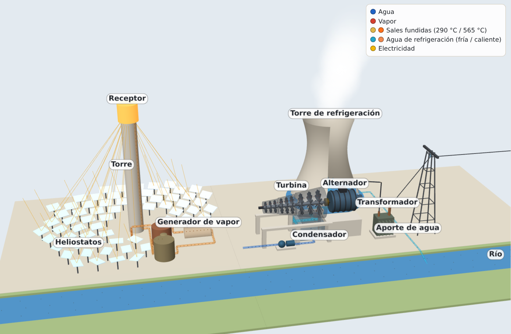
AmpliarEn las primeras torres, como las PS10 y PS20 de Sanlúcar la Mayor, el receptor calienta directamente agua y produce vapor. Las torres actuales, como la de la figura, calientan sales fundidas: suben desde un tanque frío a unos 290 °C, se calientan en el receptor hasta unos 565 °C y bajan a un tanque caliente. Del tanque caliente pasan por un generador de vapor, que mueve una turbina-alternador como la de las centrales térmicas convencionales, y vuelven al tanque frío.
Estas centrales ocupan una superficie muy grande, pues se basan en concentrar la mayor cantidad de energía solar posible en la torre. A pesar de ser centrales no contaminantes, pueden afectar a los ecosistemas locales y, en particular, a las aves de la zona.
En Sanlúcar la Mayor tenemos una central termosolar que tiene dos campos de heliostatos, cada uno con su torre (llamadas PS10 y PS20), cuyas potencias máximas son, respectivamente, 11 y 20 MW. Aquí puedes ver una fotografía de las dos torres:
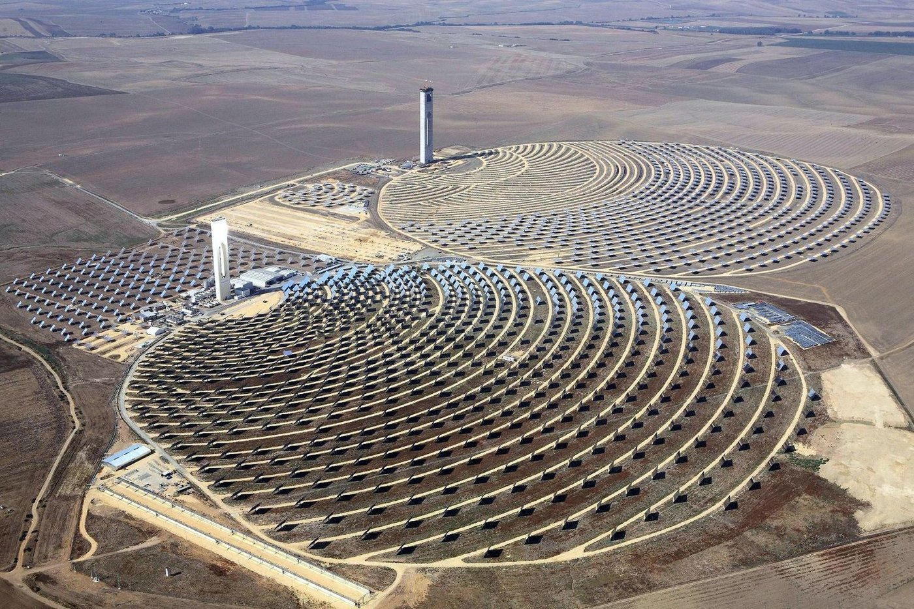
Foto: Koza1983 · CC BY 3.0 · Wikimedia CommonsColectores cilindro-parabólicos
La captación y concentración de los rayos solares se hacen por medio de espejos de forma parabólica que concentran los rayos solares en una tubería que lleva un aceite térmico. La tubería se coloca justo en el foco de la parábola, por lo que, al orientar el espejo hacia el sol, todos los rayos reflejados se concentrarán sobre la tubería.
El fluido transmite el calor desde los colectores hasta un intercambiador de calor donde pasa al agua, el agua se evapora formando vapor de agua caliente que mueve una turbina-alternador de vapor que genera electricidad.
Captadores Fresnel
Tienen una filosofía parecida a los colectores cilindro-parabólicos, pero presentan algunas ventajas frente a estos:
- Están formados por espejos planos, que son mucho más baratos de producir. Variando los ángulos de los diferentes espejos se consigue un efecto similar al que se tendría con una única parábola.
- Funcionan calentando directamente agua por lo que ya generan el vapor que puede usarse en la turbina.
Almacenamiento: electricidad cuando no hay sol
Como el calor se guarda en los tanques de sales, una central termosolar puede seguir produciendo electricidad de noche. Gemasolar (Fuentes de Andalucía, 19,9 MW) funciona unas 15 horas sin sol; las Andasol de Guadix (50 MW, cilindro-parabólicas) guardan calor para unas 7,5 horas: de día, parte del aceite caliente calienta las sales, y de noche las sales calientan el aceite. Cerro Dominador (Chile, 110 MW, 2021) llega a 17,5 horas. Es su gran ventaja frente a la fotovoltaica, que necesita baterías para guardar la energía.
Centrales fotovoltaicas
Utilizan una gran cantidad de paneles o placas solares que transforman directamente la radiación solar en electricidad en corriente continua que, mediante inversores, se convierte en corriente alterna apta para inyectar en la red.
Los paneles fotovoltaicos están compuestos por pequeñas unidades generadoras denominadas células fotovoltaicas conectadas en serie. Cada célula fotovoltaica es un diodo hecho de un material semiconductor, casi siempre silicio, con una zona P y una zona N (unión P-N): la luz libera electrones dentro del semiconductor y la unión los empuja hacia un lado, así que aparece una tensión entre las dos caras de la célula. Cada célula da una tensión de alrededor de medio voltio y, según su tamaño, una corriente de varios amperios (más de 10 A en las células grandes actuales). Hay que tener en cuenta que una sola célula produce poca electricidad, por lo que en cada módulo fotovoltaico se montan varias células en serie, y luego, a mayor escala, estos módulos se agrupan de cara a formar un generador fotovoltaico, con el que se consigue una potencia y corriente suficiente para suministrar energía a las demandas que se requieran.
La corriente eléctrica continua que proporcionan los módulos fotovoltaicos se puede transformar en corriente alterna mediante un aparato electrónico llamado inversor e inyectar en la red eléctrica (para venta de energía) o bien en la red interior (para autoconsumo). En autoconsumo, lo que la casa no gasta en ese momento (los excedentes) se vierte a la red y la compañía lo descuenta en la factura (compensación de excedentes, Real Decreto 244/2019); cuando no hay sol, la casa toma la electricidad de la red.
El proceso, simplificado, sería el siguiente:
- Los paneles generan la energía en corriente continua, a tensiones de cientos de voltios (hasta 1500 V en las grandes plantas).
- Se transforma con un inversor en corriente alterna.
- En plantas de potencia inferior a 100 kW se inyecta la energía directamente a la red de distribución en baja tensión (400 V en trifásico o 230 V en monofásico).
- Para potencias superiores a los 100 kW se utiliza un transformador para elevar el voltaje a media tensión (15 o 25 kV) y se inyecta en la red de distribución. Las plantas más grandes elevan aún más la tensión y se conectan a la red de transporte.
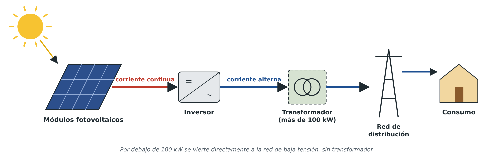
AmpliarLa potencia de un panel se da en vatios pico (Wp): la que da con K = 1000 W/m² y 25 °C. Las horas de sol útiles de los ejercicios son horas de sol pico: las horas que, a 1000 W/m², darían la misma energía que el día entero.
Las grandes plantas montan los paneles sobre seguidores de un eje, que giran de este a oeste siguiendo al sol: producen entre un 15 y un 25 % más al año que los paneles fijos (en el sur de Europa, un 20-26 %).
Con el calor, los paneles rinden menos: pierden entre un 0,3 y un 0,5 % por cada grado por encima de 25 °C, y en verano sus células pasan de 60 °C.
En 2025 la fotovoltaica produjo en España 50 188 GWh, el 18,4 % de la electricidad (el 21,3 % contando el autoconsumo, que ya supera los 9 GW instalados).
En este vídeo se explica el funcionamiento de un panel fotovoltaico:
Simulación: centrales solares térmicas
Las centrales solares térmicas también producen vapor que mueve una turbina, como las térmicas convencionales. En esta simulación puedes elegir la central de torre, la de colectores cilindro-parabólicos o la de captadores Fresnel. Pulsa «Iniciar simulación 3D»; arrastra para girar el modelo y acércate con la rueda del ratón o pellizcando la pantalla. Con los botones de vista vas directamente a cada parte.
Prueba a…
- En la central de torre, pasar de «Con sol» a «De noche»: ¿de dónde sale ahora el calor? ¿Cuántas horas de sol hacen falta para llenar los tanques de sales?
- Cambiar la radiación solar K o la superficie de captadores y ver cómo cambia la potencia. Por debajo de la potencia nominal coincide con la fórmula de esta página; por encima, la central limita la turbina a su potencia nominal y manda el calor sobrante a los tanques de sales.
- Comparar el rendimiento global de las tres centrales y la superficie de captadores que necesita cada una para la misma potencia.
Simulación: energía solar fotovoltaica
Aquí puedes ver una planta fotovoltaica, con seguidores o con estructura fija, y una vivienda con paneles en la azotea para autoconsumo. La radiación solar K se puede escribir o calcular con el sol de un día despejado en Gines, a cualquier hora. Pulsa «Iniciar simulación 3D»; arrastra para girar el modelo y acércate con la rueda del ratón o pellizcando la pantalla. Con los botones de vista vas directamente a cada parte.
Prueba a…
- Pulsar «Recorrer el día» con seguidor y con estructura fija: ¿cuál produce más? ¿Pasa lo mismo el 21 de diciembre?
- En la vivienda, cambiar la orientación y la inclinación de los paneles: ¿con cuáles se obtiene más energía en un día?
- Escribir los datos de un ejercicio de fotovoltaica (K, S, rendimiento y horas de sol) y comprobar tu resultado.
Centrales eólicas
Una central eólica o parque eólico es una zona que contiene múltiples aerogeneradores para convertir la energía cinética del viento en energía eléctrica.
Estos parques eólicos pueden ser situados en tierra o mar. Para poder utilizar la energía del viento, es necesario que este alcance una velocidad mínima que depende del aerogenerador que se vaya a utilizar pero que suele empezar entre los 3 m/s (10,8 km/h) y los 4 m/s (14,4 km/h), y que no supere unos 25 m/s (90 km/h); algunos modelos recientes siguen funcionando, con menos potencia, hasta unos 30 m/s.
Los aerogeneradores están formados por:
- Palas: suelen ser tres: es el mejor equilibrio entre rendimiento, coste y estabilidad (con dos, la máquina vibra más; con más, pesa y cuesta más y casi no gana rendimiento).
- Rotor: las palas y el buje al que van unidas; al girar, mueven el eje principal.
- Tren multiplicador de velocidad: es una caja de engranajes que convierte la baja velocidad de giro (entre 5 y 15 rpm en los grandes) y alto par del eje principal en una mayor velocidad de giro necesaria para el generador eléctrico (unas 1500 rpm en los clásicos) a costa del par. Algunos aerogeneradores actuales no llevan multiplicador: el rotor mueve directamente un generador muy grande (transmisión directa), sobre todo en los del mar.
- Generador eléctrico: es donde el movimiento mecánico del rotor se transforma en energía eléctrica.
- Controlador electrónico: permite el control de la correcta orientación de las palas del rotor y también en caso de cualquier contingencia (como sobrecalentamiento del aerogenerador) lo detiene.
Tipos de aerogeneradores
Existen dos tipos principales de aerogeneradores, según la orientación de su eje:
De eje horizontal
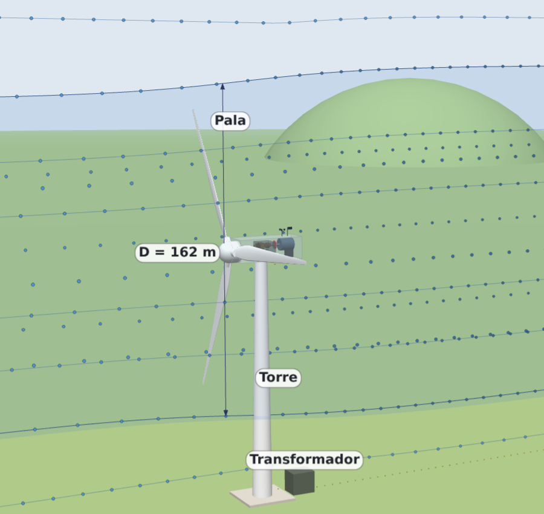
AmpliarLas palas de este aerogenerador están girando en un plano perpendicular al suelo. Hay modelos pequeños, de pocos kilovatios, y modelos muy grandes: en los parques eólicos actuales cada aerogenerador tiene varios megavatios (MW): los que se instalan hoy en tierra, unos 5-7 MW, con rotores de unos 160 m de diámetro; en el mar, 15 MW o más, con rotores de más de 230 m (el mayor que se ha construido, de 26 MW, tiene un rotor de 310 m).
Ventajas:
- Mayor eficiencia energética
- Mayores velocidades de rotación, por lo que necesitan un tren de engranajes con menor relación de multiplicación de giro.
- Aprovechan en mayor medida el aumento de la velocidad del viento con la altura.
Inconvenientes:
- Llevan el tren de potencia en la parte superior junto al eje de giro de la turbina eólica, lo que dificulta su mantenimiento.
- Son muy grandes y generan turbulencias que impiden instalarlos muy cerca unos de otros: se separan entre 5 y 9 diámetros en la dirección del viento y entre 3 y 5 en la perpendicular.
- Necesitan un sistema de guiado que los coloque siempre en la dirección en la que sople el viento.
En la simulación del aerogenerador, al final de las centrales eólicas, puedes abrir la góndola y ver cómo está hecho y cómo funciona por dentro.
De eje vertical
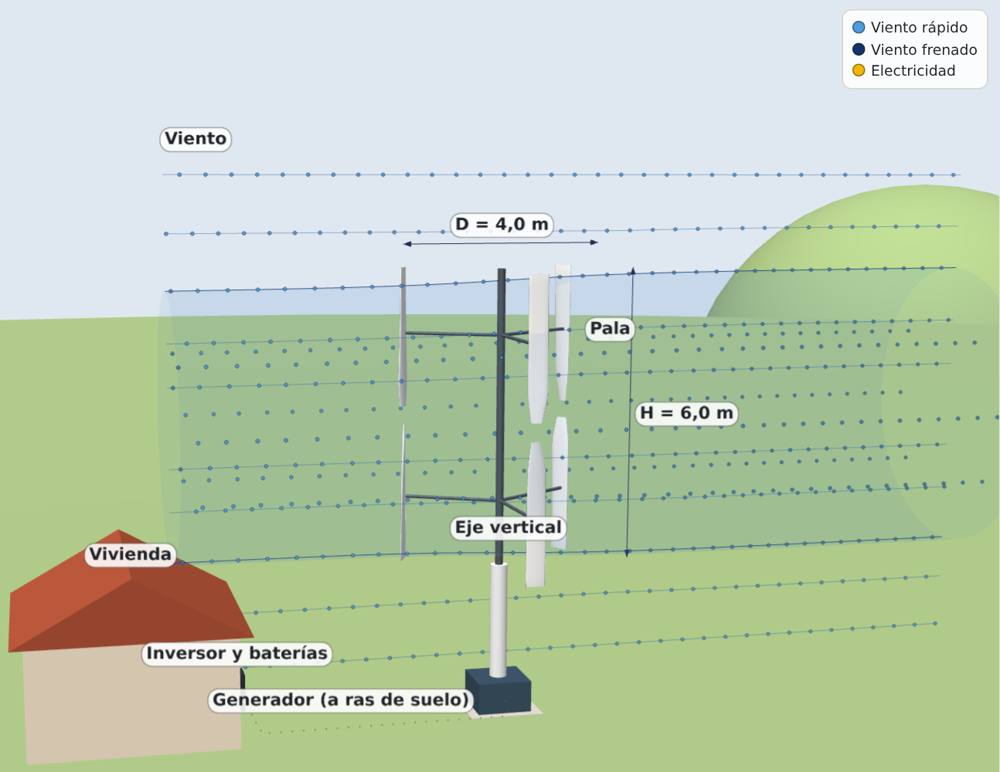
AmpliarLas palas de este aerogenerador están girando en un plano paralelo al suelo.
Ventajas:
- No necesita un sistema de orientación (da igual desde dónde sople el viento, va a funcionar igual)
- Se pueden colocar muy cerca unos de otros.
- Pueden funcionar con velocidades bajas de viento: algunos (los de tipo Savonius) arrancan con muy poco viento, aunque rinden poco.
- El generador y tren multiplicador están instalados a ras de suelo, lo que facilita su mantenimiento y disminuyen sus costes de montaje.
- Se pueden construir en tamaños pequeños, lo que permite su uso para autogeneración eléctrica.
Inconvenientes:
- Menores eficiencias frente a otro tipo de aerogeneradores.
- Mayor gasto en materiales para instalar la misma potencia de generación.
Los parques eólicos, tanto en tierra como en el mar, usan casi siempre aerogeneradores de eje horizontal. Los de eje vertical se reservan sobre todo para instalaciones pequeñas, como las de autoconsumo, y algunos diseños se están investigando para el mar, pero hoy son minoritarios.
Potencia de una central eólica
La potencia de una central o parque eólico vendrá dada por la suma de las potencias de sus aerogeneradores. Tenemos que distinguir entre:
- Potencia instalada: es la suma de las potencias nominales de todos los aerogeneradores del parque.
- Potencia real: hay que tener en cuenta que los aerogeneradores no siempre van a estar dando su máxima potencia, pues la velocidad del viento es cambiante. La suma de las potencias reales de los aerogeneradores que estén funcionando en un momento determinado será la potencia real. En España, en 2025, los unos 33 GW eólicos produjeron 58 801 GWh: de media, cada aerogenerador dio a lo largo del año alrededor del 20 % de lo que daría funcionando siempre a su potencia nominal (factor de capacidad).
Para calcular la potencia real, primero hay que saber la potencia máxima que se podría extraer del viento. Esto dependerá de la velocidad del viento y del área que barran las palas del aerogenerador. Se puede calcular con la fórmula:
\[P_{\text{máx}} = \frac{1}{2}\cdot \rho\cdot v^{3}\cdot S\]
donde:
- \(\rho\): densidad del aire (\(\text{1,25}\ \text{kg/m}^{3}\) a nivel del mar; baja con la altitud y la temperatura)
- \(v\): velocidad del viento (m/s)
- \(S\): área barrida por las palas (m2)
En realidad, la potencia anterior no es posible aprovecharla completamente. Existe un límite (llamado límite de Betz) que indica que un aerogenerador no puede aprovechar más del 59,3 % de esa potencia (se debe a la conservación de la masa y de la cantidad de movimiento del aire: para sacarle toda su energía habría que pararlo del todo detrás de las palas, y entonces no dejaría pasar al que llega). Teniendo en cuenta este límite y tomando un valor más o menos aproximado de la densidad del aire, podemos estimar la potencia teórica que puede dar un aerogenerador como:
\[P_t = \text{0,37}\cdot v^{3}\cdot S\]
El 0,37 sale de multiplicar la mitad de la densidad del aire por el límite de Betz: \(\frac{1}{2}\cdot \text{1,25}\cdot \text{0,593} \approx \text{0,37}\). Si un ejercicio te da otra densidad del aire, rehaz la cuenta a partir de \(P_{\text{máx}}\).
Es un máximo teórico: los aerogeneradores reales aprovechan como mucho entre el 45 y el 50 % de la energía del viento (entre el 75 y el 85 % de \(P_t\)), y solo cerca de la velocidad de viento para la que están diseñados. Por eso, cuando un ejercicio aplica un rendimiento \(\eta\) a \(P_t\), ese \(\eta\) no puede pasar de unos 0,85.
Estas fórmulas valen hasta la velocidad nominal del aerogenerador (unos 10-12 m/s). Con más viento, el aerogenerador gira sus palas para no pasarse y da siempre su potencia nominal; por encima de unos 25 m/s se para.
Simulación: aerogenerador
Aquí tienes un aerogenerador de eje horizontal, con la góndola abierta para ver lo que hay dentro, y uno de eje vertical. Cambia la velocidad del viento y mira cómo se frena el aire al pasar por el rotor, cuánta potencia da el aerogenerador y cuánta el parque entero. Pulsa «Iniciar simulación 3D»; arrastra para girar el modelo y acércate con la rueda del ratón o pellizcando la pantalla. Con los botones de vista vas directamente a cada parte.
Prueba a…
- Subir el viento poco a poco desde 0 hasta 30 m/s: ¿cuándo arranca, cuándo deja de crecer la potencia y cuándo se para?
- Por debajo de la velocidad nominal, duplicar la velocidad del viento: ¿por cuánto se multiplica la potencia?
- Con mucho viento, comparar la potencia que da la fórmula de esta página con la potencia real del aerogenerador.
Energía de la biomasa
El término biomasa se refiere a toda la materia orgánica que proviene de árboles, plantas y desechos de animales que pueden ser convertidos en energía; o las provenientes de la agricultura (residuos de maíz, café, arroz), del aserradero (podas, ramas, aserrín, cortezas) y de los residuos urbanos (aguas negras, basura orgánica y otros).
El aprovechamiento de la energía de la biomasa para generar electricidad se hace directamente por combustión en centrales térmicas convencionales. De hecho, las centrales térmicas convencionales de carbón o de fuel pueden quemar biomasa, mezclada con su combustible habitual (co-combustión), haciendo algunas modificaciones en sus instalaciones.
La biomasa se considera renovable porque el CO2 que se emite al quemarla es el que las plantas absorbieron al crecer, siempre que se repongan al mismo ritmo que se consumen. Aun así, su combustión emite partículas y otros contaminantes, como la de cualquier combustible, y su balance solo es bueno si se aprovechan residuos o cultivos gestionados de forma sostenible.
Centrales geotérmicas
La energía geotérmica es aquella energía que puede obtenerse mediante el aprovechamiento del calor del interior de la Tierra.
La conversión de la energía geotérmica en electricidad consiste en la utilización de un vapor, que pasa a través de una turbina que está conectada a un generador, produciendo electricidad.
En los yacimientos más calientes, el vapor sale directamente del subsuelo por los pozos de producción. También se puede generar inyectando agua en el interior de la tierra a través de un pozo de inyección y extrayéndola por su propia presión a través de un pozo de producción. Y en las centrales de ciclo binario, el fluido geotérmico cede su calor en un intercambiador a otro fluido que hierve a menos temperatura (un fluido orgánico), y es este el que se evapora y mueve la turbina.
Simulación: centrales de biomasa y geotérmicas
Las centrales de biomasa y las geotérmicas también producen vapor que mueve una turbina, como las térmicas convencionales: en las de biomasa, el calor sale de quemar residuos agrícolas y forestales; en las geotérmicas, del calor del interior de la Tierra. En esta simulación puedes elegir una u otra. Pulsa «Iniciar simulación 3D»; arrastra para girar el modelo y acércate con la rueda del ratón o pellizcando la pantalla. Con los botones de vista vas directamente a cada parte.
Prueba a…
- En la de biomasa, mirar cuántas toneladas hay que quemar al día y bajar el poder calorífico (biomasa más húmeda): ¿por qué hace falta mucha más masa que de carbón, que da unas 7000-8000 kcal/kg?
- En la geotérmica, seguir el agua desde el pozo de inyección hasta el pozo de producción: ¿de dónde sale el calor?
- Comparar el rendimiento global de las dos centrales: ¿cuál aprovecha mejor el calor?
Clasifica
Arrastra cada central a su grupo: ¿su fuente de energía es renovable o no renovable?